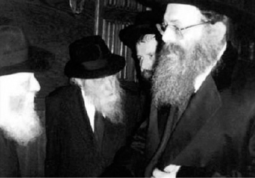

Mourning a Beloved Leader and True Friend of Chabad
The Admur Rabbi Avrohom Yaakov of Sadigora zt”l was the elder of the Ruzhiner Admurim, one of the leaders in the battle for shleimus ha’aretz and a close friend of Chabad.

The Sadigora Rebbe was born on 5 Elul 5688/1928 in Vienna. His father was the Admur Rabbi Mordechai Sholom Yosef Friedman. The Friedman family moved to Pshemishel, Poland in 1934, but left to Israel just a few years later, successfully escaping the horrors of World War II. The family moved once again to Crown Heights in the 1940’s where he functioned as his father’s right hand and was the rav of the Knesses Mordechai Shul of Sadigora Chassidim in Brooklyn.
In 5733/1973, his father told him to start Yeshivas Sadigora in B’nei Brak and so he moved to Eretz Yisroel. In 5739, after the passing of his father, the fourth in the dynasty, he succeeded his father as Admur and was appointed as a member of the Moetzes G’dolei HaTorah.
The Admur founded a center of Chassidus in the heart of Tel Aviv and developed the Chassidic community there. His beis midrash attracted thousands of Jews in Tel Aviv, from Chassidim to those not-yet-religious, who asked him for advice and brachos.
PRIVATE MEETINGS WITH THE REBBE
The Sadigora Rebbe admired the Rebbe and Chabad and he spoke of this on many occasions. He was famous for his unusual memory and for being one of the main sources for the history of Beis Ruzhin. He would describe the many connections throughout the generations between his early ancestor, the Ruzhiner Rebbe, and the Chabad Rebbeim, starting with the Baal HaTanya, on to the Tzemach Tzedek, and down to our generation.
When his father lived in the United States, he would sometimes visit the Rebbe and sometimes carry out missions from his father to the Rebbe. There were two special yechiduyos that took place after he was appointed Admur. The first time was on 4 Tammuz 5740, when they spoke about many topics, including the meeting of the Rebbe Rayatz with R’ Avrohom Yaakov zt”l, the uncle of the Admur. They also spoke about the Charson g’niza, the explanation of the statement of the Baal Shem Tov that “Malach Michoel would give away all his avoda for one pair of tzitzis,” the need to do something to prevent abortions in Eretz Yisroel (which the Rebbe said were done with the encouragement of social workers, who advised young women to prevent themselves from having more children), and the increased benefits provided to large families. The Rebbe encouraged him to continue living in Tel Aviv and not to move elsewhere.
The second yechidus was on 15 Teves 5744 and lasted an hour and a half, during which many topics were discussed concerning Torah, Avodas Hashem and communal work in general. The connection between the Rebbe Rayatz and his father came up, as did the benefit of mivtza t’fillin and the negation of claims made against it. The topic of benefits provided to large families was also raised, with the Admur expressing the concern that the Israeli government should only provide these benefits to Jewish families. The Rebbe disagreed and said that according to Shulchan Aruch, there is an obligation to be concerned about children from gentile families too.
The Rebbe addressed Russian Jewry and their mesirus nefesh for mitzvos. For example, the Rebbe said he had received a question from a Shomer Shabbos Jew in Russia who was concerned about other Jews who saw him going to work on Shabbos, who didn’t know he did no actual work there. His question was: was he permitted to make Kiddush when, according to those who saw him, he was considered a Shabbos desecrater?
The Admur attended celebrations of Siyumei HaRambam that took place over the years, as well as other Torah events of Chabad. At the first Siyum HaRambam in 5745, he spoke about the importance of learning Rambam and praised the Rebbe for instituting the daily study of Rambam. He emphasized the pertinence of the study of Rambam to every Jew, as the Rambam writes in his introduction, and he mentioned that his father encouraged the printing and dissemination of Rambam to the masses. He concluded with a bracha for the Rebbe’s upcoming birthday.
CONNECTION WITH THE SHLUCHIM
The Admur kept abreast of the work of the Rebbe’s shluchim around the world and on two occasions got to see their work up close. It was Cheshvan 5761 when the Admur went to the Ukraine where he visited his ancestors’ graves. During the visit, he was invited by Rabbi Shlomo Wilhelm, the shliach in Zhitomir, to be the sandak at a bris. The Admur expressed his admiration for the work of the Rebbe’s shluchim all over Russia and the Ukraine, who are reviving Judaism with mesirus nefesh.
In 5765, he visited the Ukraine again, with his entourage of Chassidim. The Admur participated in the inauguration of a large center of Chassidus, which had been founded before the Communist Revolution, was taken over by the communists and turned into a factory, but upon the fall of communism was renovated as a place of Torah. It was the shluchim of Zhitomir and Chernovitz who worked on regaining the center.
On this visit, he was welcomed by the students of the Chabad schools and he even invited them to permanently house the school in the beis midrash in Sadigora. During the visit, the Admur spent Shabbos there with his Chassidim. During his tish, he warmly praised the work of the shluchim throughout the world and spoke about the Rebbe.
On 3 Cheshvan 5770 he traveled to Sadigora to the grave of his great forebear, Rabbi Yisroel of Ruzhin. R’ Menachem Mendel Glitzenstein, the shliach and rav of nearby Chernovitz, joined him. The shliach helped ensure the success of the trip.
FIGHTING ON BEHALF OF SHLEIMUS HA’ARETZ
The Admur was one of those who led the way in the battle for shleimus ha’aretz. As a member of the presidium of the Moetzes G’dolei HaTorah, he fought for shleimus ha’aretz against anything and everything that might lead to land being given away, thus endangering the residents of Eretz Yisroel. At various gatherings of the Moetzes G’dolei HaTorah, he fearlessly expressed his opinion against any plan to give away land or to enable those who were in favor of doing so to come to power.
In the yechidus that he had in 5740, they discussed the topic of the prohibition, according to Shulchan Aruch, of giving away parts of Eretz Yisroel to Arabs. During their conversation, the Rebbe and Admur spoke of the many terrorist acts in Eretz Yisroel that were due to peace talks, and the danger in the Allon Plan that called for splitting Eretz Yisroel into two parts.
At the beginning of the battle for shleimus ha’aretz, the Admur was one of the first to sign to the p’sak din prohibiting the giving away of land to our enemies. The Admur also added a handwritten note of encouragement to the leaders of the organization of rabbanim and their efforts in this regard. The Admur expressed his admiration for the approach taken by the organization that the issue of shleimus ha’aretz should focus solely on the safety of Jews as it says in Shulchan Aruch, siman 329. He was always interested in their work and urged them not to stop proclaiming the Torah’s view on the subject.
In Av 5766, during the Second Lebanon War, he signed a letter encouraging mivtza t’fillin. He also signed a proclamation under the slogan, “Put on t’fillin and help destroy the enemy,” which was published by the Congress of Rabbis for Peace.
When he was unable to leave his house, due to weakness, to attend meetings of the Congress of Rabbis and to state his opinion, he asked that the meetings take place in his beis midrash so he could participate. Many remember that historic meeting during the Oslo Accords era, when Shabak agents came to photograph those present and intimidate them. The Admur was actually pleased by that and said that this way, more Jews would hear the Torah view.
During the gathering he addressed the group: “We know the Gemara which says, ‘Yaakov did not die,’ because ‘just as his children are alive, so too, he is alive.’ We see that his students are called children … and his shluchim throughout the world continue to follow in his way. All those who previously received [blessings] now also continue to receive goodness and beneficence from him in all areas. The Lubavitcher Rebbe never recoiled from saying what needs to be said. This was particularly the case regarding everything pertaining to Eretz Yisroel. It is our obligation – especially of his Chassidim, his talmidim and shluchim – to publicize with full firmness and forcefulness the prohibition of giving away land.”
In the months preceding the expulsion from Gush Katif, he was brokenhearted, knowing the great danger this move would engender. He worriedly contacted many people, time and again, sometimes several times a day, to ask what was happening and what more could be done to prevent this foolhardy move. When certain ultra-Orthodox newspapers refused to accept the sharply worded Kol Korei of rabbanim against the expulsion which he had signed to, he raised a hue and cry against them. He publicized that religious Knesset members were obligated to leave the government and it was forbidden for them to take a penny from this government, not even for yeshivos and kollelim. “For 290 million shekels they [religious Knesset members] want to endanger millions of Jews?!” he cried out.
***
“350 rabbanim, who united on the famous ‘Pikuach Nefesh’ p’sak din that forbids giving away parts of Eretz Yisroel to gentiles, greatly mourn the passing of the Sadigora Rebbe who was a role model to the rabbanim in the fierce, uncompromising battle for shleimus ha’aretz and for the peace of every Jew living in our holy land,” proclaimed the rabbanim of “Pikuach Nefesh.”
WHAT SHOULD WE DO TO HASTEN MOSHIACH’S COMING?
The Admur moved to B’nei Brak fifteen years ago where he opened a center for Chassidus and also continued to expand Sadigora Chassidus.
He was one of the great talmidei chachomim of our generation and his teachings were collected in Ikvei Abirim and were published in Kesser Yisroel, Kiryat Melech, Mesillot, etc.
The last time he was in touch with Chabad Chassidim was a few days before his passing. It was when a Chabad delegation visited his home to invite him to a farbrengen marking 200 years since the passing of the Alter Rebbe. He graciously welcomed them and they told him what activities were being done in B’nei Brak to mark the 200th year.
The Admur asked, “What’s new in Chabad?”
One of them said that “In Chabad we are waiting for Moshiach.”
The Admur asked, “What are you doing in that regard?”
The man responded, “We are trying to spread the wellsprings as Moshiach promised the Baal Shem Tov, when your wellsprings spread outward, and the event in honor of the Baal HaTanya is part of the yafutzu.”
The Admur related that in one of his yechiduyos he gave the Rebbe a book of his uncle, the Admur Rabbi Moshe of Boyan-Cracow. The Admur said that since he had given the book to the Rebbe then, he wanted to give a book now too, and he gave Knesses Mordechai with a compilation of explanations on the holidays of the previous Rebbe of Sadigora. When the Chabad delegation stood up to leave, he apologized for not being able to get up and escort them.
One of the men commented, “I’ve been to see him a number of times and he never spoke that way before.”
***
He passed away suddenly on 19 Teves, at the age of 84, to the dismay and grief of his Chassidim and admirers. This is a great loss for the “House of Ruzhin” and the Jewish people. Thousands upon thousands attended the levaya, among them some of the most prominent rabbanim in Israel, including R’ Aryeh Leib Shteinman, R’ Yona Metzger, Chief Rabbi of Israel, the Vishnitzer Rebbe, the Sanz-Klausenberger Rebbe of Netanya, the Nadvorna Rebbe, R’ Nissim Karelitz, R’ Berel Povarski and B’nei Brak Mayor Yaakov Asher with many people from Belgium and England flying in for the levaya as well.
The Rebbe is survived by an only son, Rabbi Tzvi Yisroel Moshe, Av Beis Din of the Sadigora dynasty in London, as well as two daughters and his sons-in-law R’ Pinchas Shapira of Tel Aviv and R’ Shmuel Zaanvil Scharf of the United States.
S.Z. Levin. "Mourning a Beloved Leader and True Friend of Chabad." Beis Moshiach, no. 868 (February 6, 2013).